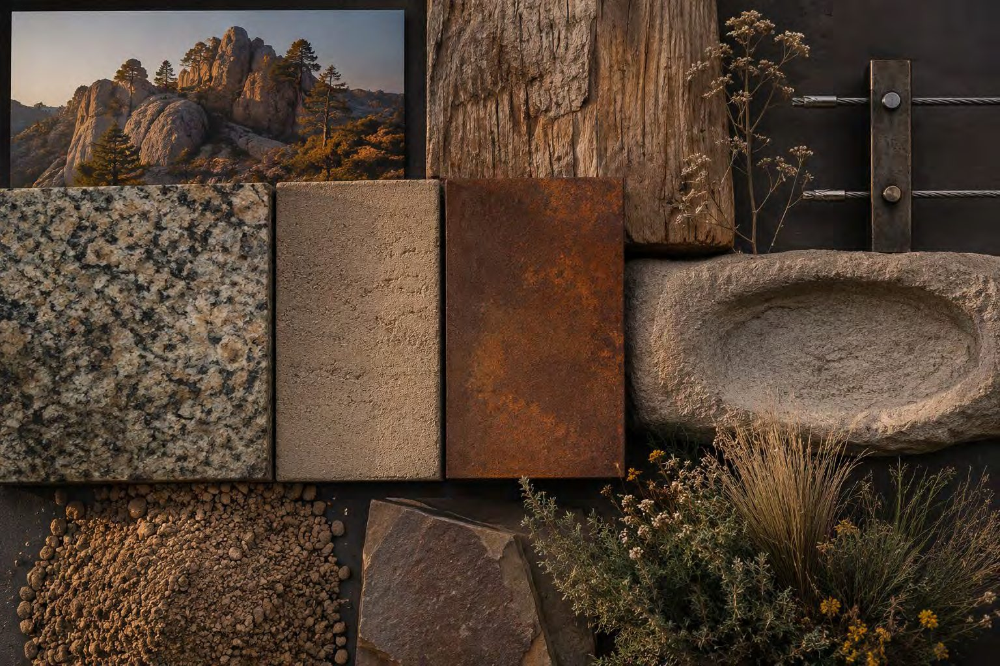
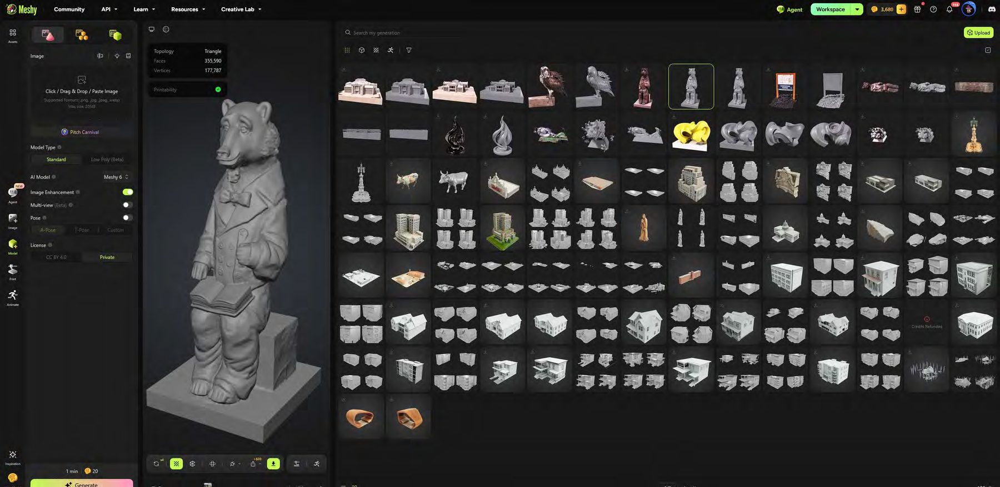

Working proofs. Real workflows. No invented case studies.
The practice is built around demonstration: test the tools, show the process, keep the constraints visible. What follows is what has actually been built and shown — not three anonymised clients with flattering percentages.
Thirty days of natural-language development
One practitioner · one month · SketchUp tooling · presented at the 2026 SketchUp Summit
I cannot code! New coding language is English — or Natural Language.
2026 SketchUp Summit deck · Speaker attribution — Dan to confirm
What can a non-coder actually build when the development language is English?
Thirty proofs of concept in thirty days, with sustained file-level testing: over 200 .rbz files and over 100 .exe / .bat files put through their paces.
Thirty working proofs of concept, characterised in the deck as “over $300k to $500k+ of coding.”
The process is ongoing — this is the current stage of Ai development. The dollar figure describes coding-equivalent value as stated in the deck; it is not revenue, audited savings, or profit. The proofs of concept are proofs of concept, not production products. No deployment, adoption, or client data is claimed here.
Source · 2026 SketchUp Summit deck · URL — Dan to provide
Representation, with the constraints held
The hard part of generative imagery in this profession is not making something pretty. It is making something that did not quietly invent a lake, move a building, or reframe your camera.
Can generative tools change materials, light and detail while leaving design intent and survey-accurate geometry untouched?
Production prompts written around explicit lock constraints — geometry, camera, composition and water bodies named as non-negotiable and enforced.
The sequence below. Each is a transformation with its constraints stated, not a client outcome.


Photorealism, Nano Banana 2. Strict image-to-image: all geometry preserved, every placeholder massing colour eliminated, no cropping or reframing. The magenta and teal do not become "similar" materials — they become real ones, in exactly the same place.
Tilted Google Earth 3D map → photoreal oblique drone photograph, roads and shoreline preserved.
Aerial → fully reconstructed 3D residential neighbourhood in regional vernacular.
Image → clean, non-overlapping semantic regions.
Boardwalk composited into a second image; then season shifted.




These are demonstrated transformations with stated constraints. They are not claims about client outcomes, project delivery, fee recovery, or approval rates.
Tools and pipelines, built rather than bought
When a workflow has no vendor answer, can a firm build its own — to its own standards?
Targeted tools aimed at specific, named bottlenecks in modelling and visualization, tested in real use rather than demoed.
Named tools and repeatable pipelines, listed below.
- NOVA — generative AI rendering.
- R[APP] — rendering AI post-processing.
- SketchUp POWER tools — Lawn Extension, Facade, and approximately thirty others.
- 2D image → 3D model pipeline — web or street-view image → refined in ChatGPT → Meshy → Skimp → SketchUp → Lumion.
- Generative video and storyboarding — a five-prompt sequence: massing growth from flat footprint → retail analysis diagram → open-space study → photoreal district in context → 360° bird's-eye orbit, with camera continuity held throughout.


The five-stage generative sequence, massing through to orbit.
The eight-part prompting guide
The practice's own framework for generative imagery. Include information from each category wherever possible.
Location
Real context.
Environment
Atmosphere, mood.
Design elements
Features, materials, planting.
Style
Representation style.
Entourage
People, vehicles, furnishings.
Composition
Camera settings, framing.
Narrative
The story you're telling.
Be specific
Vagueness is where these tools invent things.
Use AI to talk to AI.
Use a chatbot to craft the prompts you feed the image model.
This is where a cleared client case will go.
Confluence relationship + what may be published — pending confirmation, withheld from preview
About this work.
Can AI produce a photoreal rendering without changing the model geometry?
Yes. In demonstrated work, a SketchUp massing model is transformed into a photoreal rendering while all original geometry, camera position, angle and composition remain identical. The production prompt uses absolute lock constraints so that only materials, textures, lighting and architectural detailing may change — no moving, removing, resizing or obscuring of buildings, trees or streets, and no cropping, zooming or reframing.
How do you turn a 2D image into a 3D SketchUp model?
The demonstrated pipeline is: start from a web or street-view image, refine it in ChatGPT, convert it to a 3D model with Meshy, import into SketchUp via Skimp, and render in Lumion where required. Each stage is a real tool doing one job, not a single magic step.
What is the eight-part generative image prompting guide?
Location for real context; Environment for atmosphere and mood; Design elements covering features, materials and planting; Style of representation; Entourage meaning people, vehicles and furnishings; Composition covering camera settings and framing; Narrative, the story being told; and Be specific. The meta-rule is to use AI to talk to AI — use a chatbot to craft the prompt you feed the image model.
Model one workflow.
Proof is interesting. What it's worth in your firm is the actual question — and that one you can answer yourself, right now, for free.